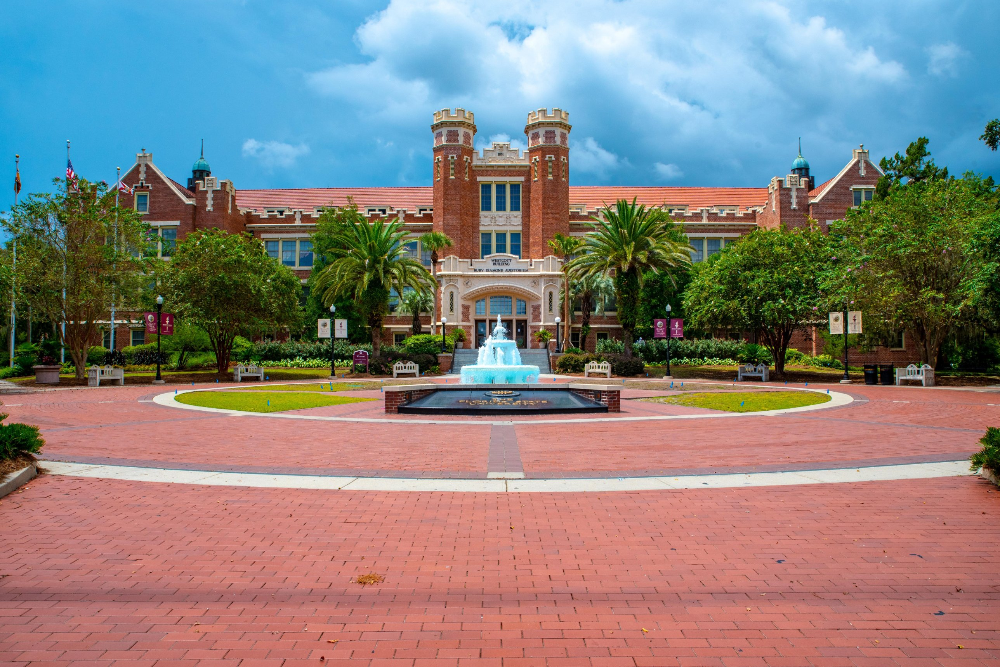

Mathematics in the Age of AI
Community guidance and graduate training for the AI era


Workshop: April 16–18, 2027 (provisional)
Department of Mathematics · Florida State University · Tallahassee, Florida
A workshop on AI and the future of mathematics is provisionally planned for April 16–18, 2027, at Florida State University. The discussions will focus on changes that mathematics departments can make in graduate education, research practice, and the evaluation of achievement in hiring, tenure, and promotion.
The program will include lectures, moderated panels, smaller working groups, and time for informal discussion.
We especially encourage participation from universities in the Southeast. Mathematics department chairs in the surrounding region will be invited, along with faculty and graduate students from their departments.
Scientific Advisory Committee
Irene Fonseca, Bryna Kra, and Ken Ono serve on the Scientific Advisory Committee. Committee and organizers.
Support
The workshop is funded by the FSU Department of Mathematics, the FSU College of Arts and Sciences, and the following professors through their named positions:
- Lingjiong Zhu, Thinking Machines Eminent Scholar Chair
- Washington Mio, Roger W. Roberts Professor in Mathematics
- Martin Bauer, Marion Bradley Brennan Professor of Mathematics
- Feng Bao, Granville L. Larimore Professor of Mathematics
- Richard Bertram, Tam Family Professor of Mathematics
- Kyle Gallivan, Professor of Mathematics